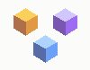
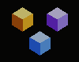

Three iso cubes whose face colours cycle through amber → violet → indigo on a 1/3-phase offset, so the trio always holds the full brand palette. ~9-second loop. Both formats below.

tessera
tesseraOn the live site (recommended): drop the SVG inline so the colours theme cleanly. The mark is just under 2 KB.
<img src="tessera-logo.svg" alt="Tessera" width="42" height="38" />
For email signatures, Slack avatars, decks, anywhere SVG isn't accepted: use the GIF.
<img src="tessera-logo.gif" alt="Tessera" width="64" height="58" />
The animation loops indefinitely. Pauses automatically when the user has prefers-reduced-motion: reduce if you wrap with <picture> + a static fallback.